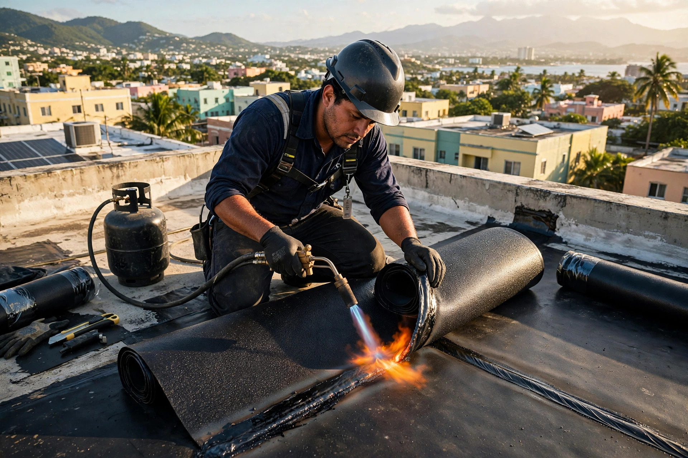
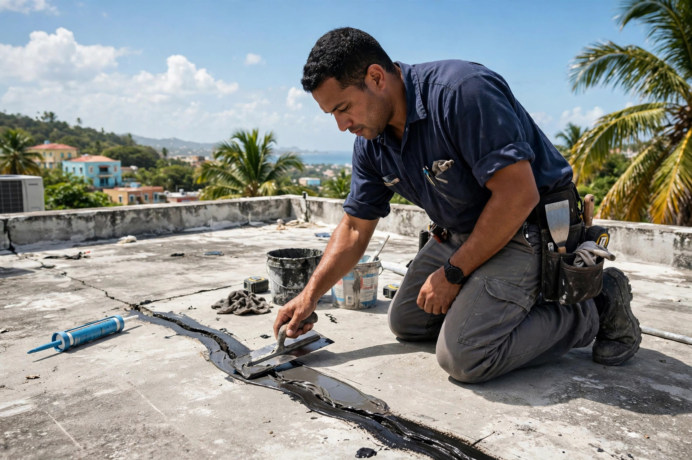
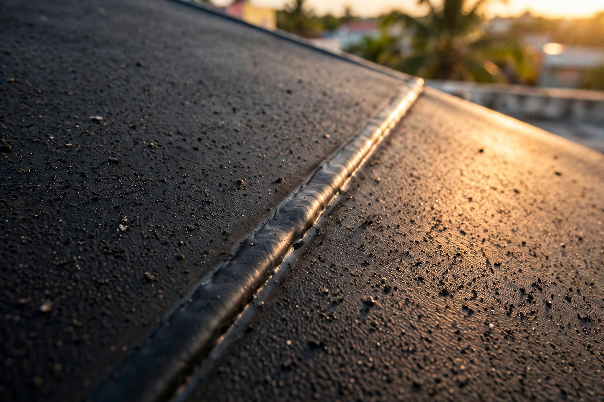

Garantía de 5 a 10 años - Carolina PR
Sellado de techos en Carolina con garantía de 5 a 10 años según el sistema instalado. El mejor material del mercado: sistema Danosa.
Resultados reales
Trabajos reales con visión clara: sellado garantizado. Toca cualquier foto para verla grande.



Desliza para ver todos los trabajos
Servicios
Sistema Danosa y garantía de 5 a 10 años: el material manda.
Sellado completo con el mejor material del mercado.
SelladoInstalamos el sistema Danosa, probado en Puerto Rico.
DanosaLocalizamos y corregimos filtraciones antes de sellar.
ReparaciónGarantía según el sistema de sellado instalado.
GarantíaSellado para casas y negocios en Carolina y el metro.
AmbosEscríbenos por WhatsApp y cotizamos sin costo.
CotizaciónAsí trabajamos
Por WhatsApp al 787-478-2710: envíanos fotos del techo.
Te cotizamos sin costo con el sistema recomendado.
Instalamos el mejor material con preparación completa.
Te entregamos garantía de 5 a 10 años por escrito.
Quienes somos
Vision Roofing sella techos en Carolina y el área metro con una visión clara: el mejor material, instalado bien, con garantía real.
Trabajamos el sistema Danosa y entregamos garantía de 5 a 10 años según el sistema instalado. Residencial y comercial.
Preguntas frecuentes
De 5 a 10 años según el sistema de sellado instalado, con el mejor material del mercado.
Cada 4 a 5 años, según el sistema aplicado y la exposición al sol y la lluvia.
Sí, si está bien adherido. Si está levantado o cuarteado, se remueve primero para que el nuevo sistema pegue bien.
Sí, servimos Carolina y el área metro. Escríbenos y confirmamos tu pueblo.
Por WhatsApp al 787-478-2710 o llamando al 787-365-8653: envíanos fotos del techo y te respondemos con un estimado gratis.
Agenda tu visita
Llena esto y te abrimos WhatsApp con tu mensaje listo.
Cotizacion sin compromiso: Estimado gratis: envíanos fotos del techo y te cotizamos el sistema Danosa.
Esta pagina la creo ManuPro. Escribenos hoy mismo y cotiza la website profesional de tu negocio.
Cotizar por WhatsApp